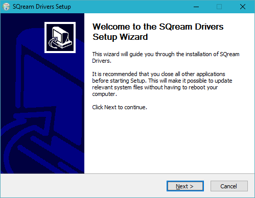
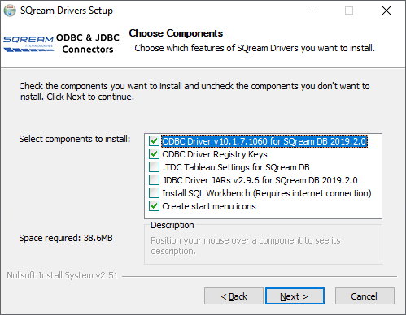
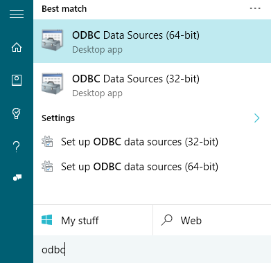
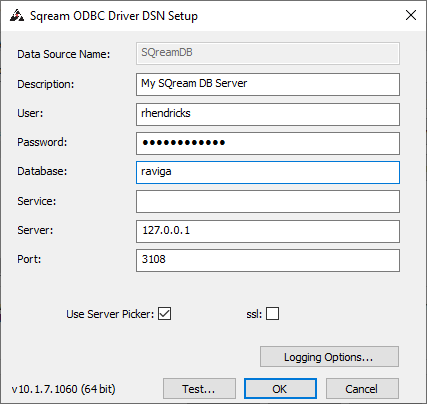
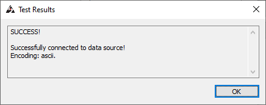

Install and Configure ODBC on Windows
The ODBC driver for Windows is provided as a self-contained installer.
This tutorial shows you how to install and configure ODBC on Windows.
In this topic:
Installing the ODBC Driver
Prerequisites
Visual Studio 2015 Redistributables
To install the ODBC driver you must first install Microsoft’s Visual C++ Redistributable for Visual Studio 2015. To install Visual C++ Redistributable for Visual Studio 2015, see the Install Instructions.
Administrator Privileges
The SQream DB ODBC driver requires administrator privileges on your computer to add the DSNs (data source names).
1. Run the Windows installer
Install the driver by following the on-screen instructions in the easy-to-follow installer.
Note
The installer will install the driver in C:\Program Files\SQream Technologies\ODBC Driver by default. This path is changable during the installation.
2. Selecting Components
The installer includes additional components, like JDBC and Tableau customizations.
You can deselect items you don’t want to install, but the items named ODBC Driver DLL and ODBC Driver Registry Keys must remain selected for a complete installation of the ODBC driver.
Once the installer finishes, you will be ready to configure the DSN for connection.
3. Configuring the ODBC Driver DSN
ODBC driver configurations are done via DSNs. Each DSN represents one SQream DB database.
Open up the Windows menu by clicking the Windows button on your keyboard (⊞ Win) or pressing the Windows button with your mouse.
Type ODBC and select ODBC Data Sources (64-bit). Click the item to open up the setup window.
The installer has created a sample User DSN named SQreamDB
You can modify this DSN, or create a new one ()

Enter your connection parameters. See the reference below for a description of the parameters.
When completed, save the DSN by selecting
Tip
Test the connection by clicking before saving. A successful test looks like this:
You can now use this DSN in ODBC applications like Tableau.
Connection Parameters
Item |
Description |
|---|---|
Data Source Name |
An easily recognizable name that you’ll use to reference this DSN. Once you set this, it can not be changed. |
Description |
A description of this DSN for your convenience. You can leave this blank. |
User |
Username of a role to use for connection. For example, |
Password |
Specifies the password of the selected role. For example, |
Database |
Specifies the database name to connect to. For example, |
Service |
Specifices service queue to use. For example, |
Server |
Hostname of the SQream DB worker. For example, |
Port |
TCP port of the SQream DB worker. For example, |
User server picker |
Connect via load balancer (use only if exists, and check port) |
SSL |
Specifies SSL for this connection |
Logging options |
Use this screen to alter logging options when tracing the ODBC connection for possible connection issues. |
Troubleshooting
Solving “Code 126” ODBC errors
After installing the ODBC driver, you may experience the following error:
The setup routines for the SQreamDriver64 ODBC driver could not be loaded due to system error
code 126: The specified module could not be found.
(c:\Program Files\SQream Technologies\ODBC Driver\sqreamOdbc64.dll)
This is an issue with the Visual Studio Redistributable packages. Verify you’ve correctly installed them, as described in the Visual Studio 2015 Redistributables section above.